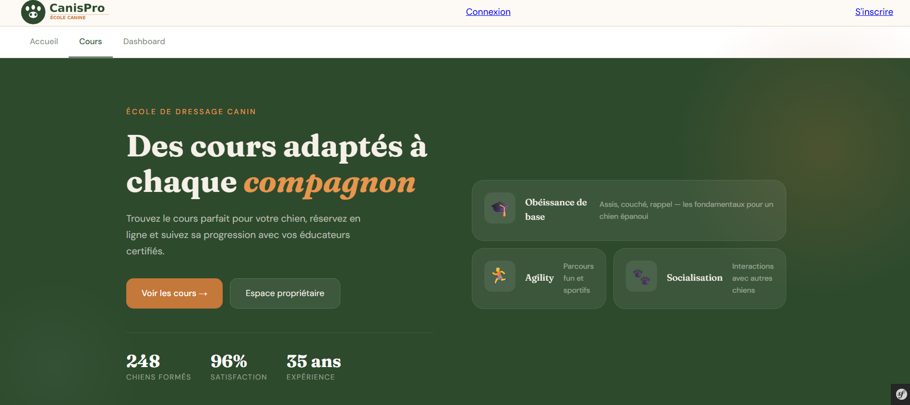

Ce projet consiste à créer une application web pour le centre CanisPro Éducation. L'objectif est de remplacer la gestion sur papier et tableurs par un outil numérique unique. Cette solution permet de centraliser les dossiers des chiens, d'organiser les plannings plus facilement et de mieux communiquer avec les clients.